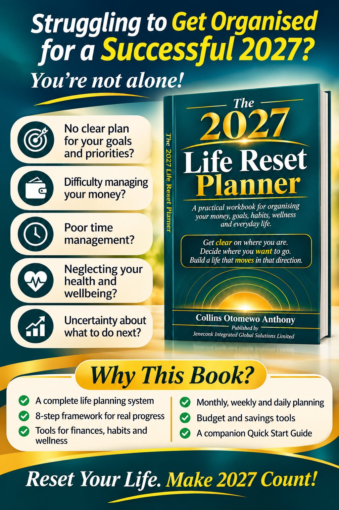
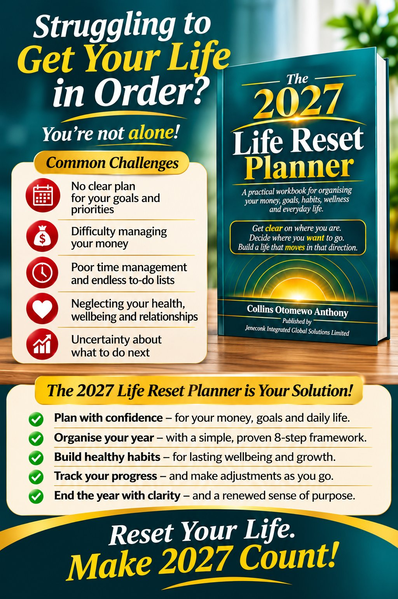
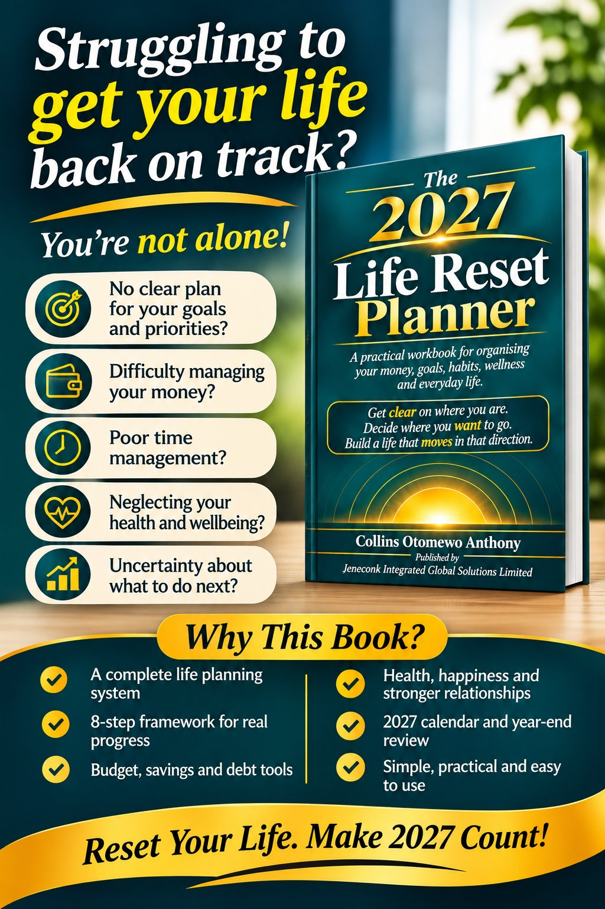

At a glance: Selar describes the planner as an 86-chapter, 12-part life-planning workbook. It combines an eight-step planning framework, a 90-day reset programme, financial worksheets, habit and wellbeing tools, and annual, monthly, weekly and daily planning systems. The Selar listing also includes a companion Quick Start Guide.
This guide explains what the planner is designed to help you organise, how its sections connect, and how to choose a starting route that fits your current needs. A planner can support reflection and follow-through; it cannot guarantee outcomes or replace professional advice.
What is inside The 2027 Life Reset Planner?
The planner is structured as a connected system rather than a collection of unrelated worksheets. It moves from self-reflection and direction-setting into practical life systems, focused action, regular planning and review. The 12 parts cover:
- Reflect and reset: take stock of current circumstances, experiences, values and priorities.
- Envision your year: describe your direction and establish goals and milestones for 2027.
- Your financial reset: review income, expenses, budgeting, spending, savings and debt using your own currency.
- Build better habits and routines: identify patterns, triggers and routines that support your priorities.
- Prioritise your wellness: reflect on wellbeing, self-care, movement, sleep, emotional wellness and health appointments.
- Invest in personal growth: plan learning, reading, confidence, skills development and boundaries.
- Organise your home and everyday life: consider household tasks, decluttering, cleaning, meals, groceries and important documents.
- Nurture your relationships: give attention to meaningful connections, important dates and ways to stay connected.
- Your 90-day life reset: turn a small set of priorities into a focused 30/60/90-day progression.
- Your monthly planning system: organise each month around priorities, finances, habits, wellbeing, learning, home and relationships.
- Weekly and daily planning: connect larger intentions to commitments, priorities and the next useful action.
- Close the year with purpose: review goals, finances, habits, wellbeing, relationships, home and lessons to carry forward.
The workbook contains 86 guided chapters across these parts. The Quick Start Guide maps chapters and reusable tools to the planning steps, so you can find a worksheet when you need it instead of completing every page consecutively.
The eight-step Life Reset Planning Framework
The framework links reflection to action. Annual direction informs goals; goals are broken into a 90-day focus, then organised into monthly, weekly and daily plans. Reviews help you notice progress and adjust when circumstances change.
| Step | Planning question | What it helps you do |
|---|---|---|
| 1. Reflect | Where am I now? | Establish a realistic starting point and understand current responsibilities. |
| 2. Envision | Where do I want to go? | Describe a meaningful direction for the year that reflects your own life. |
| 3. Set goals | What do I need to achieve? | Translate direction into goals, milestones and the systems that support them. |
| 4. Focus | What will I do first? | Choose a manageable set of actions for a 90-day period. |
| 5. Organise | How will I organise my time? | Connect goals to monthly priorities and responsibilities. |
| 6. Plan the week | How will I make it happen? | Review commitments, select priorities and allocate realistic time. |
| 7. Choose today | What matters today? | Identify a useful next action while leaving room for real-life demands. |
| 8. Review | How am I progressing? | Reflect regularly, learn from what happened and adjust the plan. |
Three ways to start, depending on what you need
Route A: Complete annual reset
Choose this route if you want a fuller foundation for 2027. Begin with reflection and current circumstances, clarify values and direction, set goals, and then work through the financial, habit, wellbeing, growth, home and relationship sections. Continue into the 90-day, monthly, weekly and daily systems. The guide recommends spreading this work over multiple sessions if that feels more realistic.
Route B: Start with a 90-day reset
Choose this route if you are beginning later in the year, returning after a break, or need to focus on a specific period of change. Identify a few areas that need attention, define what progress could look like, make a sequence of actions and use weekly planning to keep the work visible. A 90-day reset can start at any time; it does not need to begin on 1 January.
Route C: Quick weekly reset
Choose this route if you already understand your broader priorities and mainly need help organising responsibilities and time. Capture competing tasks in a brain dump, review fixed commitments, identify the week’s most important outcomes, estimate the time required and decide what can be moved, delegated or simplified. Return to the wider life-planning sections when an area needs more attention.

How to use the planner without feeling overwhelmed
A comprehensive life planner should create clarity, not become another standard you feel you have failed to meet. The companion guide suggests working with one section or planning task at a time, starting with what matters now and keeping the number of active priorities manageable.
- Begin with reflection, not a long task list. Understand your current responsibilities, resources, challenges and achievements before committing to new goals.
- Choose a few priorities. Several things may matter, but not all need immediate action.
- Make plans fit your real capacity. Account for work, study, family responsibilities, health, travel, energy and available time.
- Use trackers to make decisions. Review what the information shows and adjust routines or targets where needed.
- Allow plans to change. A change in income, work, health or family responsibilities may require a different plan. Updating it is part of using a flexible system.
- Return after a missed week. Resume from your current circumstances rather than trying to recreate a perfect streak.
The quick start guide suggests planning roughly 70–80% of available productive time as a flexible starting point, leaving room for unexpected demands. It explicitly presents this as a guideline to adapt, not a scientific rule or required target.
Connect annual goals to a practical planning rhythm
| Planning level | Suggested review | Useful questions |
|---|---|---|
| Annual | At the start of your planning year and periodically afterward | What matters most? What responsibilities and resources shape the year? |
| 90-day | At the beginning and during each focus period | Which few priorities deserve concentrated action? What would progress look like? |
| Monthly | At the beginning and end of each month | What dates, finances, routines and responsibilities need attention? What should change next month? |
| Weekly | Once a week, preferably before the new week | What are the fixed commitments, key outcomes and realistic time available? |
| Daily | At the start of the day or the previous evening | What is the most important task today? What can reasonably fit around commitments? |
| Year-end review | At the close of the year | What changed, what remains unfinished, what did you learn and what do you want to carry forward? |
The relationship between levels is straightforward: daily actions support weekly commitments; weeks contribute to monthly priorities; months move 90-day goals forward; and those goals connect back to your annual direction. You do not need to work on every level every day.
What the planner helps you organise
- Goals and projects: annual vision, goals, progress dashboards and projects with several stages.
- Money: income and expense review, budgets, spending, savings, debt and unexpected-cost preparedness. The worksheets allow you to enter the currency symbol or code relevant to you.
- Habits and routines: triggers, existing patterns, practical alternatives and consistency tracking.
- Wellbeing and growth: reflection on self-care, sleep, movement, emotional wellbeing, learning, skills and personal boundaries.
- Home and relationships: household systems, documents, meals, important dates and meaningful connections.
- Time and next actions: reusable monthly, weekly and daily planning tools to choose what to do next.
Print or use the files digitally
The companion guide explains that the planner PDFs can be printed in the matching A4 or US Letter paper size. If you prefer digital use, open a PDF in a reader or annotation app that supports text boxes, drawing or stylus input. The PDFs are not fillable forms, so entries are added as annotations; save a working copy and test your app on one page first.
The EPUB edition is for reading and reference. Keep your answers in a notebook or notes app, or use a PDF edition when you want to write on the pages. Reusable weekly and daily templates are not 365 separately dated daily pages; print or copy them as often as you need.

Who may find this planner useful?
It may suit someone who wants one place to reflect on the year and organise personal goals, money, habits, wellbeing, household responsibilities and relationships. It may also help a person who already has clear goals but wants a repeatable weekly and daily routine, or someone who prefers a time-bounded 90-day focus.
It may be less suitable if you want a short dated calendar with minimal reflection, an automatic digital task manager, fillable PDF fields, or a substitute for a qualified adviser. Check the Selar listing for the current files and product details, and consider whether a guided workbook matches the way you prefer to plan.
Get clear on where you are. Decide where you want to go.

Explore the 86-chapter planner and companion Quick Start Guide on Selar. Review the product page for current purchase details and available files.
View The 2027 Life Reset Planner on SelarFrequently asked questions
What is The 2027 Life Reset Planner?
It is a guided life planning workbook with 86 chapters across 12 parts. It connects reflection, goals, finances, habits, wellbeing, personal growth, home and relationships with a 90-day reset and monthly, weekly and daily planning.
Do I have to complete the whole planner at once?
No. The companion guide recommends taking one section or planning task at a time. You can begin with a full annual reset, a 90-day reset or a quick weekly reset, then return to other sections when useful.
Can I start the 90-day reset later in the year?
Yes. The 90-day reset can begin at any point in the year. It is designed as a focused planning route for someone starting later, returning after a break or concentrating on a smaller set of priorities.
Can I use the planner digitally or print it?
The PDF planner can be printed in the matching A4 or US Letter size or annotated with a PDF reader. The EPUB is intended for reading and reference; record answers separately or use a PDF edition for writing on pages.
Does the planner provide professional financial or health advice?
No. It is an educational planning tool and does not replace individual financial, tax, legal, medical, mental health or debt advice. Speak with a qualified professional for advice specific to your situation.
Explore more practical resources in the JENECONK Learning Resource Center, including the Christmas 2026 budgeting guide.